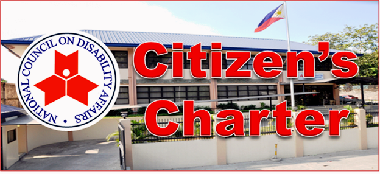

Home
Look at NCDA
The National Council on Disability Affairs (NCDA) is the national government agency mandated to formulate policies and coordinate the activities of all agencies, whether public or private, concerning disability issues and concerns. As such, the NCDA is the lead agency tasked to steer the course of program development for persons with disabilities and the delivery of services to the sector.
The NCDA is tasked to monitor the implementation of several laws to ensure the protection of PWDs’ civil and political rights. These laws include Republic Act No 7277 (Magna Carta for Disabled Persons), Batas Pambansa Blg. 344 (Accessibility Law), Republic Act 6759 (White Cane Act) and ILO Convention No. 159 (Vocational Rehabilitation of Persons With Disability). It has also been tasked, through Proclamation No. 125, to coordinate activities and to monitor the observance of the Asian and Pacific Decade of Disabled Persons (1993-2002) in the Philippines. Proclamation No. 125 was issued by the President on January 15, 1993, to enjoin both the government and the private entities to organize projects based on the policy categories mentioned in the agenda for action of the decade.

Get in touch with NCDA; become a productive member of the society; and be the best version of yourself as a Person with Disability!
PWD of the Week

Dr. Wilfredo Villegas
The first Filipino blind doctor who specializes in oriental medicine. He runs a clinic in California where he's the one giving up due to the overwhelming number of his clients. Massage and acupuncture are just basic to him as he has studied both Western and Eastern practices tthroughout his life.
Dr. Villegas is the main sponsor behind the "Pamaskong Handog", a singing plus song writing competition that is exclusive for the visually impaired persons.
The said competition's 2nd edition will be held on Leny Saturnino YouTube channel, and the contest is set to have it's grand final's winner to get Php 10,000 as the grand prize.
See MoreFeatures from Blog Spot
RJ Del Rosario is one of the grand finalists on "Pamaskong Handog". This is the song that he composed to win on the semi finals lastt December 4, 2021.
Look for more inspiring songs throughout the competition on Leny Saturnino.
Wach Out for Pamaskong Handog 2022

Pamaskong Handog
A singing plus song writing competition ethat is exclusive for persons with visual impairment.
The competition will be on November to December 2022.
Pamaskong Handog is airing on Leny Saturnino YouTube channel on Saturdays with the support of its main sponsor and the brain behind the contest, Dr. Wilfredo Villegas
The contest aims to showcase the talents of the visually impaired persons in singing and song writing, and it is one of the Christmas gifts of Dr. Villegas to his fellow visually impaired persons who really had a a hard time coping up with the pandemic due to its impact on the massage industry.
The following is the prizes for this competition:
- Grand Winner - Php 10,000
- 2nd Place - Php 5,000
- 3rd and 4th Place - Php 2,500
Now, what are you waiting for?
Support this contest for PWDs who are also conducted by our fellow PWDs.